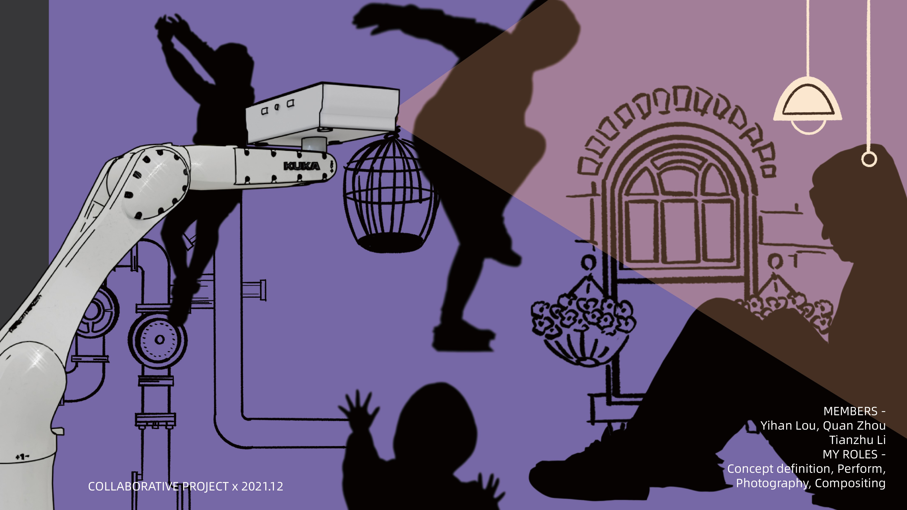
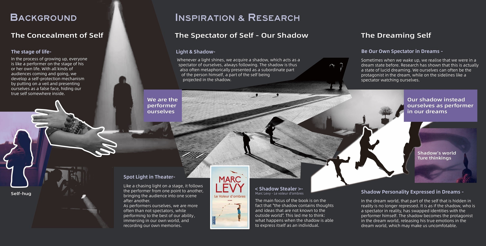
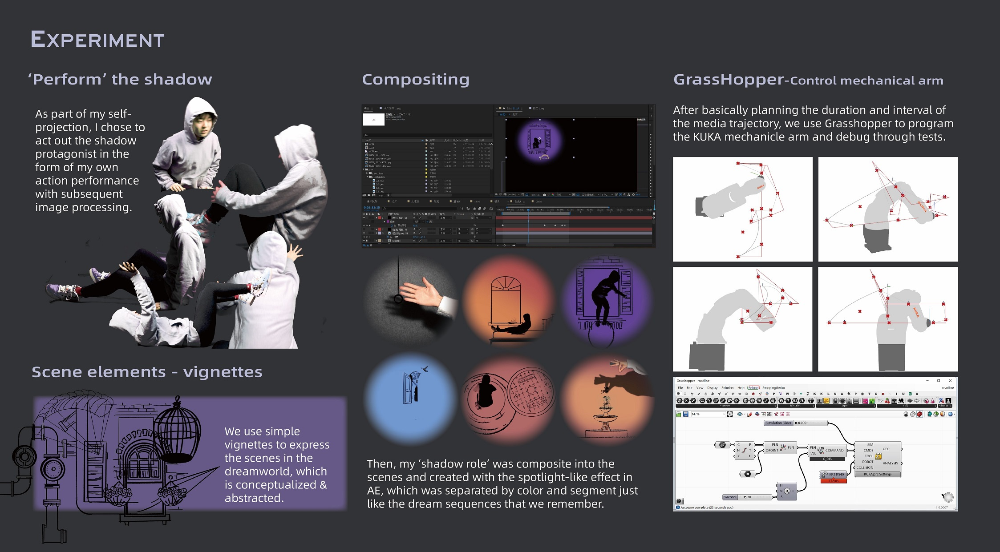

我们一生都在为来来去去的观众表演，而被藏起来的那一部分自我，最终被流放到了影子里。兜兜淘梦把这场逃亡搬上舞台：KUKA 机械臂携着投影的光在空间中穿行，像一束追光，把零散的梦境片段串起来 —— 直到成为主角的不是表演者，而是影子。
00结论摘要
这个项目是什么，以及它为什么成立兜兜淘梦是一次实验性的机械臂艺术演出。机械臂按固定的点位轨迹，携着媒体投影在空间中穿行，像一束追光，通过光影与空间的互动，把多个零散的梦境片段串联起来。作品通过构建睡眠中「一个有自我意识的影子」的「出逃计划」，论证那个让我们想要逃离的过去其实是我们内心的一部分 —— 而我们有能力面对内在的自己。
- 主题是我们藏起来的那个自我，并且它被表述为一种机制，而不是一种情绪。在成长过程中，每个人都像是在自己人生的舞台上表演；观众来来去去，我们于是发展出一种自我保护机制 —— 戴上面纱、以一张假面示人 —— 并把真实的自我藏在某个地方。作品以这份「藏」作为起手条件。
- 影子被用作「观看者」，这正是这个隐喻得以成立的原因。只要有光，我们就拥有一个影子；它始终跟随着我们，通常也被理解为人的从属部分 —— 自我被投射出去的那一部分。所以影子就是我们：我们既是表演者也是观众，因而要上演它的反抗，并不需要虚构一个反派。
- 研究把一种感受变成了一个论点。三条线索汇聚：影子作为自我的观看者；清醒梦 —— 在其中我们既能是主角，也能在侧边观看自己；以及马克·李维的《偷影子的人》，它的前提是影子承载着连本人都不自知的想法。
- 机械臂不是装饰，而是调度装置。为机械臂编程轨迹，使投影能够像剧场的追光那样行动，把观众从一个场景带到下一个。常规的灯光提示无法在三维空间中扫过整个空间，而正是那种运动，让梦境读起来是连续的，而不是一组幻灯片。
| 形式 | 实验性机械臂艺术演出 —— 由工业机械臂携行的投影媒体 |
| 年份 | 2021.12 |
| 团队 | 合作项目 —— Yihan Lou、Quan Zhou、Tianzhu Li |
| 我的分工 | 概念定义 · 表演 · 摄影 · 合成 |
| 核心命题 | 睡眠中一个有自我意识的影子的「出逃计划」—— 我们想逃离的过去，其实是我们内心的一部分 |
| 交付物 | 背景研究 · 表演影像 · 小品式场景系统 · 合成场景 · 驱动 KUKA 机械臂的 Grasshopper 运动程序 · 记录影片 |
01概念
专业方向：概念框定作品建立在一个关于剧场的观察之上。像舞台上的一束追光，表演者从一个点被跟随到另一个点，把观众带进一个又一个场景。但作为表演者本身的我们，往往同时也是观众 —— 一边全力以赴地表演，一边沉浸在自己的世界里，记录着自己的记忆。
在梦境世界里，现实中那个被藏起来的自我不再被压抑。就好像影子 —— 现实中的观看者 —— 与表演者本人交换了身份。影子成为主角，在梦境世界中释放它真实的情感，这也许令我们不适；而这种不适，恰恰是作品所经营的要点。
演出刻意把影子塑造为一个有自我意识的存在，而不是一个怪物。它的「出逃计划」不是对表演者的报复，而是那个被藏起来的自我在主张：它属于同一个人。作品要抵达的不是冲突，而是辨认 —— 我们有能力面对内在的自己。
02研究
专业方向：理论支撑这个概念是一个关于身份的论点，而它由三条线索拼合而成 —— 每一条都提供了论证中的不同部分，而不是用来装饰。
自我的观看者
只要有光照来，我们就拥有影子，它充当自我的观看者并始终跟随 —— 通常被理解为人的从属部分，也就是自我被向外投射的那一部分。这一条确立了「影子就是我们」，而不是一个外来的形象。
做梦的自我
醒来时意识到自己此前身处梦境，描述的正是清醒梦 —— 在这种状态里，我们既可以是主角，又能在侧边作为观看自己的观众。它提供了那个让影子可以走上前来、取代表演者的舞台。
偷影子的人
马克·李维的《Le Voleur d'ombres》聚焦于一个想法：影子中承载着连本人都不自知的思想与念头，并描写了当一个影子能够作为独立个体表达自己时会发生什么 —— 这是本项目最清晰的先例。
03实验与制作
专业方向：表演、运动编程与合成制作由四个环节构成，它们被如此选择，是因为每一个环节都在回答一个概念无法在纸面上回答的问题：影子长什么样、它出现在哪里、它如何被照亮，以及光本身应该怎样运动。
「表演」这个影子
作为我个人自我投射的一部分，我选择以自身动作表演的形式亲自演出影子的主角，再进行影像处理 —— 而不是找演员或做动画。
场景元素 —— 小品
用简单的线条小品 —— 鸟笼、门洞、吊灯 —— 来表达梦境世界中的场景，它们是概念化并抽象化的，而非写实渲染的。
合成
影子的角色被合成进这些场景，并在 After Effects 中赋予类似聚光灯的效果，按颜色与片段分隔处理 —— 就像我们记得的梦境片段那样，这才让一个个离散画面读起来成为一场连续的梦。
Grasshopper 控制机械臂
在基本规划好媒体的时长与间隔之后，用 Grasshopper 为 KUKA 机械臂编程，并通过反复测试调试 —— 这一环节把光从一次「投影」转换为一个会运动的「表演者」。
这个概念依赖于「把观众从一个场景带到下一个场景」，就像追光在剧场里所做的那样。固定投影仪会同时铺满整个房间，把梦压平成一幅图像；线性轨道只能扫出一条线。为六轴机械臂编程，可以让投影在三维中行进并停顿 —— 于是光本身成了表演者，而场景之间的空隙可以被编排上节奏。
04背景与制作展示
研究与过程
